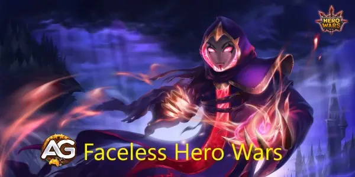
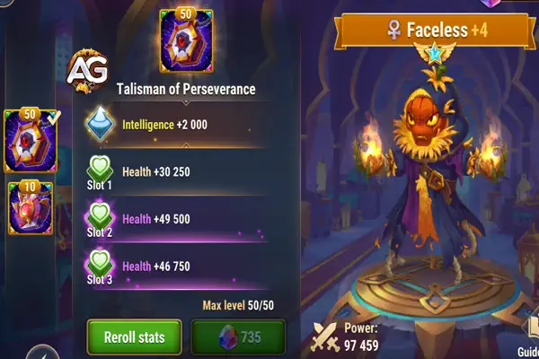
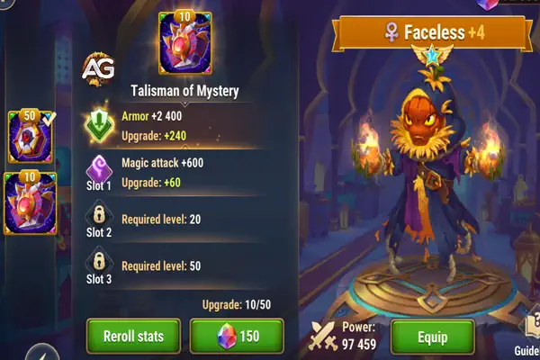
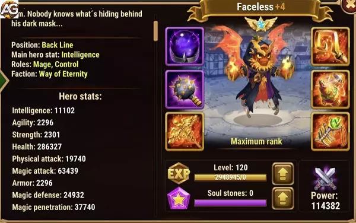

Descubra as melhores estratégias para Sem Rosto em Hero Wars Alliance. Aprenda sobre seus talismãs, incluindo o Talismã da Perseverança e o Talismã do Mistério, para maximizar seu desempenho em batalhas PvP e Hydra.
Atributos Principais
Posição:
Linha de Fundo
Função:
Mago, Controle
Estatísticas principal:
Inteligência
Facção:
Eternidade
Como conseguir:
Eventos, baú heroico, Loja do Salteadores
Tier List
Tier List Geral 2025:
S
Tier List de Hidra:
S

Ilustração do Sem Rosto, personagem do jogo Hero Wars Alliance, desenvolvido pela Nexters.
Desvendando o Enigma: Dominando Sem Rosto em Hero Wars
No universo dinâmico de Hero Wars, onde a profundidade estratégica reina suprema, poucos heróis comandam tanto intriga e versatilidade quanto Sem Rosto. Um mestre da adaptação, Sem Rosto possui habilidades que se integram perfeitamente em qualquer composição de equipe, confundindo adversários e mudando o rumo da batalha com uma finesse incomparável. Neste guia abrangente, mergulhamos nas complexidades de utilizar Sem Rosto de forma eficaz, explorando seu conjunto de habilidades único e sinergias estratégicas para capacitar os jogadores em sua busca pela vitória.
Sósia: A Arte da Mimicria
No coração do arsenal de Sem Rosto está a habilidade enigmática de imitar as habilidades tanto de aliados quanto de inimigos, tornando-o uma força imprevisível a ser enfrentada no campo de batalha. Com o Sósia, Sem Rosto assume a forma do último herói a usar sua primeira habilidade, desencadeando uma versão replicada dessa habilidade com uma potência formidável. O que diferencia o Sósia é sua adaptabilidade, permitindo que Sem Rosto responda dinamicamente a cenários de combate em mudança e explore os pontos fortes de equipes adversárias. No entanto, é crucial notar que certas habilidades são imunes à replicação, adicionando um elemento de estratégia ao processo de tomada de decisão.
Lançamento Poderoso: Alterando o Equilíbrio de Poder
Além de sua destreza em mimetizar, Sem Rosto possui capacidades formidáveis de controle de multidões, epitomizadas por sua devastadora habilidade de Lançamento Poderoso. Com um movimento ágil, Sem Rosto ergue o inimigo mais próximo antes de lançá-lo no coração da formação inimiga, atordoando todos os inimigos dentro do alcance por dois segundos cruciais. O Lançamento Poderoso não apenas causa danos significativos, mas também perturba formações inimigas, criando aberturas para ataques aliados e mudando o rumo da batalha instantaneamente. A implantação estratégica do Lançamento Poderoso é essencial, capitalizando seu potencial disruptivo para controlar o fluxo do combate e ditar o ritmo dos engajamentos.
Relâmpago em Cadeia: Arsenal Arcano
Nenhum mestre estrategista estaria completo sem uma variedade de feitiços debilitantes à sua disposição, e Sem Rosto não é exceção. Com o Relâmpago em Cadeia, Sem Rosto desencadeia uma barragem de projéteis mágicos que ricocheteiam entre inimigos, causando dano e diminuindo seu ataque físico por uma duração. Essa habilidade de dupla finalidade não apenas inflige danos consideráveis aos adversários, mas também enfraquece suas capacidades ofensivas, inclinando decisivamente a balança da batalha a favor de Sem Rosto e seus aliados. Quando usado em conjunto com suas outras habilidades, o Relâmpago em Cadeia se torna uma ferramenta potente para exercer controle sobre o campo de batalha e desmantelar as defesas inimigas com precisão cirúrgica.
Especialista em Feitiços: Escudo do Arcano
Completando o conjunto de habilidades formidáveis de Sem Rosto está o Especialista em Feitiços, uma habilidade passiva que fortalece as defesas mágicas de toda a sua equipe. Através de sua expertise arcana, Sem Rosto imbui seus aliados com resistência elevada a ataques mágicos, reforçando sua capacidade de sobrevivência e resiliência contra conjuradores de magia inimigos. Este benefício defensivo é inestimável em engajamentos prolongados, fornecendo um amortecedor crucial contra ataques mágicos entrantes e garantindo a longevidade dos aliados de Sem Rosto no campo de batalha.
Sinergias e Considerações Estratégicas
Embora Sem Rosto seja uma força formidável por si só, seu verdadeiro potencial é desencadeado quando combinado com aliados sinérgicos que complementam suas habilidades e ampliam seu impacto no campo de batalha. Uma dessas combinações que tem recebido considerável atenção é com o temível K'arkh, cuja produção de danos devastadores se harmoniza perfeitamente com as habilidades de replicação de Sem Rosto. Ao sincronizar suas habilidades, como Sem Rosto copiando o Lançamento Poderoso de K'arkh enquanto K'arkh executa Tendrils Mortais, os jogadores podem desencadear combinações devastadoras que destroem formações inimigas e garantem a vitória com eficiência implacável.
Compreendendo Sem Rosto
No cerne da utilidade de Sem Rosto está sua habilidade característica de copiar habilidades de heróis inimigos, tornando-o uma carta selvagem capaz de mudar o rumo da batalha instantaneamente. Essa imprevisibilidade inata representa um desafio significativo para os adversários, pois eles devem constantemente reavaliar sua abordagem diante de ameaças em constante mudança. Além disso, Sem Rosto possui capacidades de controle de multidões, com a capacidade de atordoar inimigos e diminuir seus ataques físicos. Além disso, sua presença fortalece as defesas mágicas dos aliados, tornando-o um ativo valioso no combate a equipes adversárias pesadas em magia.
Análise dos Talismãs do Sem Rosto Hero Wars Mobile
Sem Rosto é um herói versátil, e seus talismãs impactam significativamente seu desempenho em vários cenários de batalha. Aqui, vamos analisar os dois principais talismãs: o Talismã da Perseverança e o Talismã do Mistério, focando em seus atributos, benefícios e casos de uso ideais.
Talismã da Perseverança
Atributos:
Inteligência: +2000 (o que se traduz em +6000 Ataque Mágico, +2000 Defesa Mágica e +2000 Ataque Físico)
Saúde: +165.000 (dividido em três slots de rolagem de +55.000 cada)

Sem Rosto com o Talismã da Perseverança, Hero Wars Alliance.
Análise:
O Talismã da Perseverança proporciona um aumento equilibrado nas principais estatísticas do Sem Rosto, aprimorando sua sobrevivência e capacidade de dano mágico. O aumento na Inteligência resulta em um impulso significativo no seu Ataque Mágico, permitindo que Sem Rosto cause mais dano com suas habilidades. Além disso, a Defesa Mágica adicional ajuda-o a resistir a ataques mágicos, tornando-o mais durável contra equipes baseadas em magia.
O aumento substancial de saúde de +165.000 solidifica ainda mais o papel do Sem Rosto como um herói resistente, capaz de suportar batalhas prolongadas. Isso o torna particularmente eficaz em cenários PvP, como batalhas de arena e guerras de guilda, onde tanto dano mágico quanto físico são prevalentes. A combinação de dano aprimorado, defesa e saúde garante que Sem Rosto possa superar os oponentes enquanto causa dano consistente.
No entanto, em batalhas contra a Hydra, este talismã pode levar a uma leve redução no desempenho geral. O aumento da Defesa Mágica significa que Sem Rosto sofre menos dano dos ataques mágicos da Hydra, o que pode resultar em menos ativações de sua habilidade final e artefatos. Isso pode reduzir ligeiramente seu dano em tais batalhas, onde o uso frequente de habilidades é essencial.
Talismã do Mistério
Atributos:
Armadura: +12000
Ataque Mágico: +19800 (dividido em três slots de rolagem de +6600 cada)

Sem Rosto com o Talismã do Mistério, Hero Wars Alliance.
Análise:
O Talismã do Mistério foca na defesa física e no poder ofensivo puro. A Armadura adicional melhora significativamente a capacidade do Sem Rosto de resistir a ataques físicos, tornando-o mais resistente contra equipes que dependem de dano físico. Enquanto isso, o aumento de +6000 no Ataque Mágico melhora seu potencial de dano, beneficiando suas habilidades que escalam com o Ataque Mágico.
Este talismã é particularmente eficaz em cenários onde Sem Rosto enfrenta equipes que causam muito dano físico. A Armadura adicionada permite que ele absorva mais golpes, enquanto o aumento no Ataque Mágico garante que ele possa retaliar com habilidades mágicas potentes. No entanto, é importante notar que apenas duas das habilidades do Sem Rosto se beneficiam diretamente do aumento de Ataque Mágico proporcionado por este talismã. Assim, embora aumente seu potencial de dano, seu impacto geral é mais situacional em comparação com o Talismã da Perseverança.
Em PvP e batalhas gerais, o Talismã do Mistério pode ser altamente eficaz contra combinações específicas, mas pode não oferecer o mesmo nível de versatilidade que o Talismã da Perseverança. Além disso, este talismã pode ser vantajoso ao enfrentar a Hydra, já que o aumento na Armadura oferece proteção contra os ataques físicos da Hydra, e o aumento no Ataque Mágico pode ajudar a manter um alto potencial de dano.
Resumo dos Talismãs do Sem Rosto
Talismã da Perseverança: Este é o talismã mais versátil e equilibrado, ideal para batalhas PvP, lutas na arena e guerras de guilda. Ele melhora o dano, a durabilidade e a sobrevivência geral do Sem Rosto contra ameaças mágicas e físicas, tornando-o a escolha superior para a maioria dos cenários.
Talismã do Mistério: Embora mais especializado, este talismã se destaca em situações onde Sem Rosto enfrenta equipes focadas em dano físico. Ele aumenta sua Armadura e Ataque Mágico, tornando-o mais forte contra oponentes físicos e melhorando seu desempenho em batalhas específicas, como contra a Hydra.
Em resumo, o Talismã da Perseverança é geralmente a melhor escolha para a maioria dos jogadores, oferecendo desempenho consistente em uma ampla variedade de batalhas. O Talismã do Mistério, por outro lado, é uma opção mais específica, proporcionando benefícios direcionados que podem ser cruciais em certos confrontos, especialmente quando a defesa física é uma prioridade.
Pontos Positivos e Negativos
Pontos Positivos
Copia a primeira habilidade de inimigos e aliados
Atordoa vários inimigos de uma vez
Reduz o ataque físico dos inimigos por 4s
Buff de defesa mágica de 3000 para todos os aliados
Pontos Negativos
Baixo ataque físico para copiar inimigos ágeis
Baixa defesa física
Prioridade na Evolução de Estatísticas
Prioridade dos Glifos
Prioridade
Glifos
1º
Vida
2º
Penetração Mágica
3º
Ataque Mágico
4º
Inteligência
5º
Ataque Físico
Prioridade de Artefatos
Com Sem Rosto, priorize a Inteligência nos artefatos, pois para cada ponto de inteligência, ele ganha 3 pontos de ataque mágico, 1 ponto de defesa mágica e 1 ponto de ataque físico.
Então, se decidir usar Sem Rosto em equipes de Satori ou outros magos, priorize a arma para dar mais penetração mágica; se for usar equipes de Eternidade com Keira e Dante, priorize o livro para ganhar mais ataque mágico e penetração mágica.
Prioridade
Artefatos
1º
Anel
2º
Arma (Penetração Mágica)
3º
Livro
Prioridade de Skins
Prioridade
Skins
1º
Vida
2º
Penetração Mágica (Super)
3º
Ataque Mágico
4º
Inteligência
5º
Dano Mágico Crítico
6º
Defesa Mágica

Sem Rosto com a skin Demoníaca, Hero Wars Alliance.
Sem Rosto vs Hidra
Sem Rosto está na equipe meta para a Hidra em Hero Wars Alliance e pode causar muito dano, e agora com o talismã ele receberá mais inteligência e estatísticas de vida, podendo aumentar consideravelmente o dano nas hidras.
Ao incorporar Sem Rosto em sua composição de equipe, é crucial capitalizar sua habilidade de cópia de habilidades enquanto aproveita as sinergias com outros heróis. Uma parceria notável é com o formidável K'arkh, cuja produção de danos devastadores se harmoniza excepcionalmente bem com a capacidade de Sem Rosto de imitar suas habilidades. Ao coordenar suas habilidades, como Sem Rosto copiando o Lançamento Poderoso de K'arkh enquanto K'arkh executa Tendrils Mortais, os jogadores podem desencadear combinações devastadoras que destroem linhas inimigas. Essa sinergia destaca a importância da coordenação estratégica e do timing na maximização do potencial de Sem Rosto dentro de sua equipe.
Melhores Equipes de Sem Rosto
Número da Equipe
Heróis
1
Aidan, Sem Rosto, Mushy, Kayla, Julius
2
Aidan, Sem Rosto, Mushy, Kayla, Cleaver
3
Aidan, Sem Rosto, Cascade, Morrigan, Mushy
4
Aidan, Sem Rosto, Cascade, Mojo, Mushy
5
Aidan, Sem Rosto, Mojo, Alvanor, Mushy
6
Aidan, Sem Rosto, Kayla, Tristan, Julius
7
Sem Rosto, Amira, Jorgen, Satori, Astaroth
8
Sem Rosto, Amira, Celeste, Satori, Astaroth
9
Martha, Sem Rosto, Amira, Satori, Astaroth
10
Aidan, Sem Rosto, Morrigan, Keira, Corvus
11
Sem Rosto, Iris, Morrigan, Keira, Corvus
12
Fafnir, Sem Rosto, Morrigan, Keira, Corvus
13
Sem Rosto, Jorgen, Celeste, Satori, Astaroth
14
Martha, Sem Rosto, Jorgen, Satori, Astaroth
15
Phobos, Sem Rosto, Morrigan, Keira, Corvus
16
Phobos, Sem Rosto, Jorgen, Morrigan, Corvus
17
Martha, Sem Rosto, Jorgen, K'arkh, Astaroth
18
Sem Rosto, Jorgen, Nebula, K'arkh, Astaroth
19
Martha, Sem Rosto, Nebula, K'arkh, Astaroth
Conclusão do Guia de Sem Rosto
No tecido em constante evolução de Hero Wars, Sem Rosto se destaca como um paradigma de adaptabilidade e engenhosidade estratégica. Com sua habilidade incomparável de imitar habilidades, controlar o campo de batalha e reforçar as defesas de seus aliados, Sem Rosto incorpora a essência da supremacia tática. Ao dominar a arte da imitação e aproveitar as combinações sinérgicas, os jogadores podem aproveitar todo o potencial de Sem Rosto e liderar suas equipes para a vitória na luta contínua pela dominação. Abraçe o enigma e deixe Sem Rosto abrir caminho para a glória no campo de batalha de Hero Wars.
Você gostou do nosso Guia do Sem Rosto? Há algo que não entendeu ou gostaria de sugerir mudanças? Convidamos você a se juntar à nossa sessão de comentários na página do Alexandre Games Blog. Não hesite em expressar sua opinião, clarificar suas dúvidas e compartilhar sua sugestões. Clique no botão abaixo para começar:
 Amira
Amira Astaroth
Astaroth Celeste
Celeste Fobos
Fobos
 Satori
Satori